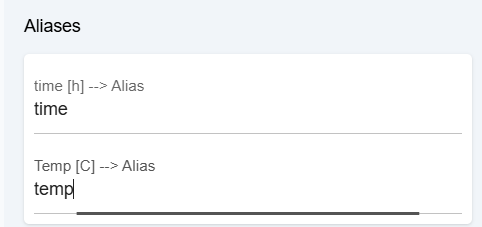
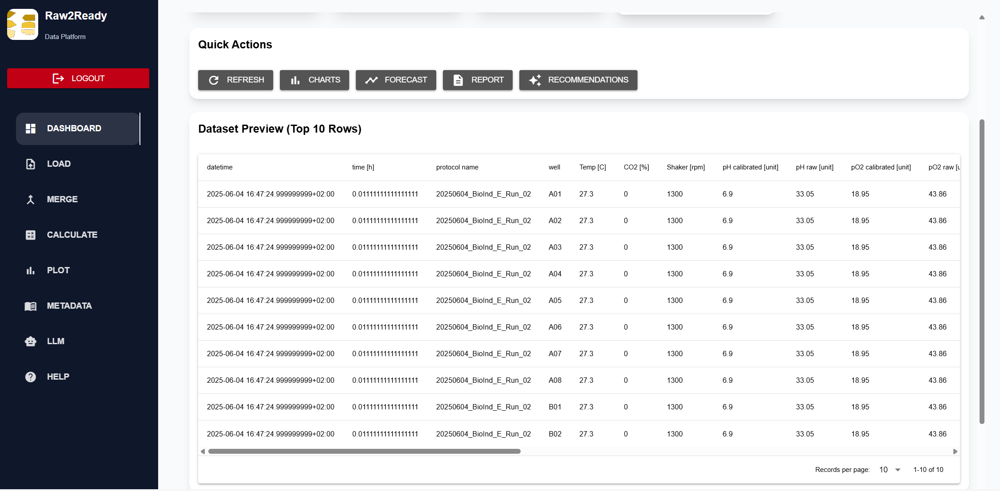

Calculate Module
Generate derived variables and biochemical parameters using configurable mathematical expressions.
Overview
The Calculate Module enables users to create new variables from existing experimental measurements through configurable mathematical expressions.
Instead of manually editing datasets in external spreadsheet software, Raw2Ready performs all calculations automatically using a configurable formula engine.
Every generated variable becomes immediately available to the Plot Module, Statistics Module, Metadata Module and the AI Multi-Agent framework.
Objectives
- Create derived variables.
- Execute mathematical expressions.
- Support user-defined equations.
- Compute biochemical parameters.
- Store generated variables.
- Prepare datasets for downstream analysis.
Why Calculations are Necessary
Raw experimental datasets usually contain only directly measured variables such as temperature, dissolved oxygen, agitation speed and substrate feed.
However, researchers frequently require derived variables that are calculated from these primary measurements.
- Oxygen Uptake Rate (OUR)
- Carbon Evolution Rate (CER)
- Specific Growth Rate (μ)
- Yield Coefficients
- Productivity
- Biomass Estimation
The Calculate Module automates these repetitive computations while ensuring reproducibility and consistency across experiments.
Formula Engine
At the core of the Calculate Module lies the Formula Engine.
Mathematical expressions are defined in YAML configuration files and evaluated dynamically at runtime.
Dataset
│
▼
Aliases
│
▼
Constants
│
▼
Formula Parser
│
▼
Expression Evaluation
│
▼
Generated Variables
This approach separates experimental logic from program code, allowing researchers to define custom equations without modifying the software.
Configuration Structure
Calculation rules are organized into three independent components.
| Component | Purpose |
|---|---|
| Constants | Fixed experiment parameters. |
| Aliases | Human-readable variable mapping. |
| Formulas | Mathematical expressions. |
Calculation Workflow
Every formula follows the same execution pipeline.
Load Dataset
│
▼
Load Constants
│
▼
Resolve Aliases
│
▼
Parse Formula
│
▼
Validate Variables
│
▼
Execute Expression
│
▼
Store New Variable
│
▼
Runtime Memory
Constants
Constants represent fixed numerical values that remain unchanged throughout an experiment. These values are defined once and can be reused by multiple formulas.
Typical examples include reactor volume, solution density, calibration factors and experimentally determined coefficients.
constants:
reactor_volume: 2.5
biomass_density: 1.03
oxygen_constant: 0.245
temperature_offset: 0.15
Centralizing constants improves consistency and simplifies maintenance when experimental parameters change.
Variable Aliases
Aliases map long dataset column names into short, programming-friendly identifiers.
This simplifies mathematical expressions while preserving descriptive column names inside the final dataset.
aliases:
biomass: "Biomass [g/L]"
glucose: "Glucose [g/L]"
oxygen: "Dissolved Oxygen [%]"
airflow: "Air Flow [L/min]"

Mathematical Expressions
Each calculated variable is defined by a mathematical expression written using Python syntax.
formula:
growth_rate = biomass.diff() / time.diff()
oxygen_transfer =
oxygen * airflow
yield =
biomass / glucose
Expressions may combine arithmetic operators, NumPy functions and supported pandas functionality.
Formula Dependency Resolution
Some calculated variables depend on previously generated variables.
Raw2Ready automatically determines the correct execution order before evaluating formulas.
Biomass
│
▼
Growth Rate
│
▼
Yield
│
▼
Productivity
Dependency analysis guarantees that every variable is calculated only after all required inputs become available.
Runtime Formula Evaluation
During execution the Formula Engine evaluates every expression dynamically using the currently loaded dataset.
- Parse mathematical expression.
- Validate referenced variables.
- Replace aliases.
- Insert constants.
- Execute calculation.
- Store resulting column.

Safe Formula Execution
Raw2Ready executes user-defined formulas inside a controlled evaluation environment.
- Variable validation
- Syntax checking
- Division-by-zero protection
- Missing-variable detection
- Runtime exception handling
- Secure execution environment
Formula execution is isolated from the operating system to prevent unsafe code execution.
Error Reporting
When a calculation fails, Raw2Ready provides detailed diagnostic information.
| Error | Description |
|---|---|
| Missing Variable | Required dataset column not found. |
| Invalid Formula | Formula syntax error. |
| Division by Zero | Invalid mathematical operation. |
| Unsupported Function | Formula uses unavailable function. |
NiceGUI Formula Builder
The graphical interface allows users to create formulas interactively without editing YAML files.
- Formula editor
- Variable selector
- Constant selector
- Syntax validation
- Live preview
- Save formula

Runtime Memory Integration
Every calculated variable is appended directly to the active dataset stored in Runtime Memory.
Merged Dataset
│
▼
Calculate Module
│
▼
Generated Variables
│
▼
Updated Dataset
│
▼
Runtime Memory
│
├── Plot Module
├── Statistics Module
├── Metadata Module
└── AI Agents
Generated Output
After successful execution, every calculated variable is appended as a new column to the active dataset.
The generated dataset remains fully compatible with every subsequent Raw2Ready module.
| Input Variables | Generated Variables |
|---|---|
| Biomass | Growth Rate |
| Oxygen | OUR |
| Carbon Dioxide | CER |
| Glucose | Yield |
| Time | Productivity |

AI Integration
Newly calculated variables become immediately available to the Multi-Agent AI framework.
Calculate Module
│
▼
Runtime Memory
│
├── Plot Module
├── Statistics Module
├── Metadata Module
├── Data Analyst Agent
├── BacDive Explorer
├── Literature Reviewer
└── Master Summarizer
Derived biochemical variables often provide more informative evidence for AI reasoning than raw sensor measurements alone.
Best Practices
- Keep formulas simple and modular.
- Store reusable constants separately.
- Use aliases instead of long column names.
- Validate every generated variable.
- Inspect units before combining variables.
- Document custom equations for reproducibility.
- Review generated plots after every calculation.
Troubleshooting
| Problem | Possible Cause | Recommended Solution |
|---|---|---|
| Formula failed | Invalid syntax | Verify the mathematical expression. |
| Missing variable | Alias not defined | Check the alias configuration. |
| Incorrect values | Wrong constant | Verify experiment-specific constants. |
| Runtime error | Invalid operation | Inspect division-by-zero and missing values. |
| Unexpected output | Dependency order incorrect | Verify formula dependencies. |
Summary
The Calculate Module transforms raw experimental measurements into biologically meaningful process variables through a flexible and configurable formula engine.
By combining constants, aliases and mathematical expressions, Raw2Ready enables reproducible biochemical calculations without requiring modifications to the underlying source code.
Every generated variable becomes an integral part of the active experimental dataset, supporting visualization, statistical analysis and evidence-based AI reasoning.
Next Step
After generating derived variables, users typically continue with the Plot Module to visualize trends, compare variables and explore experimental behaviour through interactive figures.